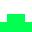

スプライトを作る¶
それでは画面を真っ黒にできたら、画面に表示するキャラクターのスプライトを作りましょう。
注釈
スプライトという単語で反応したNinjaは、なかなかのScrach使いとみた。
といっても簡単で、素材ファイルがあれば以下の行を追加するだけです。
1 2 3 4 5 6 7 8 9 | # 背景透過が必要ないとき
pc_img = pygame.image.load("読み込みたいイメージファイル").convert()
# 背景透過が必要なとき
pc_img = pygame.image.load("読み込みたいイメージファイル").convert_alpha()
# 背景色を指定していても、背景が透明にならない場合について
pc_img = pygame.image.load("読み込みたいイメージファイル").convert()
colorkey = pc_img.get_at((0, 0)) #左上の色を透明色に
pc_img = set_colorkey(colorkey, RLEACCEL)
|
ここでは以下の素材を使いましょう。
それでは、 game.py を以下のように書き換えましょう。
1 2 3 4 5 6 7 8 9 10 11 12 13 14 15 16 17 18 19 20 21 22 23 24 25 26 27 28 29 30 31 32 33 34 35 36 37 38 39 40 41 42 43 44 45 46 47 48 49 50 51 | import pygame, math
from pygame.locals import *
import sys
SCR_RECT = Rect(0, 0, 800, 600) # スクリーンサイズ(px指定)
# キャラクターのスプライト（クラス）を作る
class CharacterSprite(pygame.sprite.Sprite):
def __init__(self, filename, x, y, vx, vy):
pygame.sprite.Sprite.__init__(self)
self.image = pygame.image.load(filename).convert_alpha()
width = self.image.get_width()
height = self.image.get_height()
self.rect = Rect(x, y, width, height)
self.vx = vx
self.vy = vy
def update(self):
# 画面からはみ出ないようにする
self.rect = self.rect.clamp(SCR_RECT)
def draw(self, screen):
screen.blit(self.image, self.rect)
if __name__ == '__main__':
pygame.init()
screen = pygame.display.set_mode(SCR_RECT.size)
pygame.display.set_caption("プチプチシューティング")
# スプライト作成
MyPC = CharacterSprite("pc_img.png", 400, 500, 100, 100)
# 画面の更新時間を管理するオブジェクト
fps = pygame.time.Clock()
# ゲームイベントループ
while True:
screen.fill((0, 0, 0))
fps.tick(60)
# スプライト更新
MyPC.update()
# スプライトを描画
MyPC.draw(screen)
pygame.display.update() # 画面を更新
# イベント処理
for event in pygame.event.get():
if event.type == QUIT: # 終了イベント
sys.exit()
|
難しいことは抜きにすると、class（クラス）というのはScratchでいうところの スプライト 、 プログラミンでいうところの 絵 です。 そしてdefという単語で始まっているのは メソッド と呼ばれるもので、これはScratchの ブロックを作る に近いです。
さて、実行するとこんな画面が出てくると思います。

「しかし面倒な書き方してるなあ」
そう思ったNinjaは、後々この書き方をしていてよかったと思えるようになるはず。